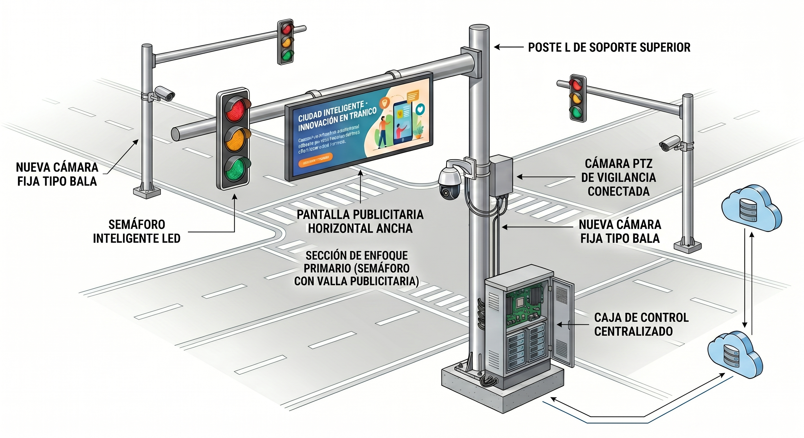
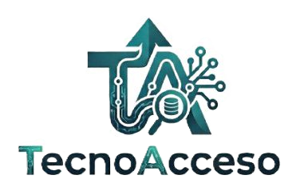

Proyecto Panoptes
El Ojo que todo lo ve de la Seguridad Ciudadana
Proyecto Panoptes es una plataforma de Inteligencia Operativa Visual que consolida la seguridad y movilidad de una ciudad en un Mapa Vivo Interactivo. En una sola interfaz unificada, el sistema actúa como el ojo que todo lo ve, fusionando semaforización IoT inmune a apagones, videoanalítica avanzada de marcas líderes (Hikvision / Dahua) y una red inteligente de integración comercial privada.
"La ciudad es un flujo constante de datos. Panoptes es el ojo que los unifica."
Nuestra pantalla principal rompe con el pasado. Los operadores ya no sufren fatiga visual viendo decenas de cámaras aburridas esperando que algo ocurra; ahora gobiernan la ciudad desde un **Mapa Interactivo Dinámico**.
Semáforos IoT
respaldo electrico
Central inteligente
Búsqueda de Rostros
Búsqueda de Placas
El poder de absorber la infraestructura existente.
Cablear una ciudad desde cero toma años y cuesta millones. La verdadera robustez del Proyecto Panoptes radica en su capacidad de asimilar de inmediato el CCTV que el sector privado ya instaló en licorerías, farmacias, clínicas y hospitales. Al fusionar nuestras cámaras de punta con los ojos comerciales, eliminamos los puntos ciegos y creamos una red de rastreo continuo en tiempo real.
Estado actual: Modo Pasivo. Flujo local protegido, encriptado y con consumo cero de ancho de banda municipal.
Captura Perimetral Inteligente
Nuestras cámaras municipales de alta gama (Hikvision / Dahua) en avenidas y estaciones de servicio blindan los accesos principales, extrayendo metadatos puros como números de placa (ANPR), rostros y analítica de flujo.
Asimilación Inmediata de Vecindario
Ante una alerta o activación de botón de pánico, el software calcula el radio de desplazamiento del objetivo y absorbe temporalmente los ojos exteriores del sector privado (hospitales, licorerías, tiendas) en la ruta estimada.
Rastreo Continuo Sin Puntos Ciegos
El sistema une los puntos públicos y privados creando un hilo conductor visual en la central. El operador reconstruye la trayectoria exacta del suceso o vehículo en tiempo real a través de calles donde la infraestructura pública no llega.
trending_up Inversión Pública Optimizada
El municipio solo gasta en los nodos neurálgicos de control y semaforización, optimizando el presupuesto.
hub Cobertura Multiplicada por 6
El tejido urbano se densifica utilizando el hardware ya pagado por el sector comercial, logrando costo cero en cableado secundario para la administración.
La Ingeniería Tras el Milagro
Soberanía tecnológica total diseñada para máxima eficiencia y bajo costo operativo.
Nodos IoT 110V (ESP32)
Transformamos los semáforos antiguos de Araure en dispositivos inteligentes capaces de comunicarse por red, reduciendo el costo de controladores industriales tradicionales en un **80%**.
Integración de Punta (Hikvision/Dahua)
El software habla nativamente con las mejores cámaras del mercado, extrayendo metadatos e inteligencia artificial sin pagar licencias anuales de software extranjero.
Base de Datos Autónoma + APIs
Un núcleo robusto con bases de datos geoespaciales para el mapa, listo para enlazarse mediante APIs seguras a instituciones nacionales para la consulta inmediata de datos de identidad o propiedad vehicular.
Cámara de Videoanalítica
Especificaciones Técnicas
Demostración de la Interfaz (UI/UX Simulada)
Interactúe con las pestañas de abajo para simular las alertas y reacciones en tiempo real del Ojo de Dios en el centro de control.
El mapa de Araure se encuentra **limpio y vigilado**. Los nodos semafóricos IoT reportan conectividad constante y ciclo ordinario.
Un Proyecto que se Paga Solo
EL GANCHO FINANCIERO (ROI PARA EL GOBERNANTE)
Implementar el **SADES Urban Core** no es un gasto, es una inversión con retorno medible. Al automatizar las foto-multas en avenidas y semáforos mediante la lectura de placas, el municipio incrementa su recaudación fiscal de forma transparente y legal.
Los ingresos generados por las infracciones viales absorben el costo del proyecto en los **primeros 6 a 12 meses**, dejando una infraestructura tecnológica de primer nivel que le pertenece por completo al municipio.
Dispositivo de Seguridad Inteligente PANOPTES (DSIP)
El DSIP es la unidad fundamental de despliegue táctico del proyecto. No son elementos aislados en un poste, sino una estación urbana integrada que unifica control de tráfico, videoanalítica avanzada, respaldo energético y un sistema de financiamiento autónomo conectado de forma remota a la central.

info Clic en los números para mayor información
Caja de Control Centralizado
Cerebro IoT (ESP32) que controla las luces a 110V, centraliza los cables mediante un switch PoE industrial y regula la carga.
ROI Dinámico: El Motor Financiero
La valla digital LED convierte un gasto público en una inversión auto-financiable. Mediante pautas publicitarias gestionadas en la web, el municipio genera ingresos pasivos recurrentes que amortizan el 100% de la instalación y el mantenimiento.
inventory_2 Lista de Materiales Estandarizada por Intersección (Kit DSIP) expand_more
| Componente / Concepto | Especificación Técnica / Detalle | Costo Est. (USD) |
|---|---|---|
| Caja de Control Centralizada | Tarjeta IoT (ESP32), gabinete metálico IP65, relés de potencia, protecciones y reguladores de voltaje. | $450.00 |
| Cámaras de Videoanalítica | 1 Domo PTZ de alta velocidad + 2 Cámaras fijas bala (Compatibles con analíticas de tráfico y lectura ANPR). | $1,200.00 |
| Respaldo de Energía | Inversor híbrido de gestión eficiente + Banco de baterías LiFePO4 de ciclo profundo (Respaldo activo de 4 horas). | $950.00 |
| Módulo de Sustentabilidad | Pantalla publicitaria digital LED exterior de alta definición, alto brillo, con soporte para control remoto vía web. | $2,800.00 |
| Luminaria Semafórica | Cabezal semafórico de 3 luces (Rojo, Amarillo, Verde) con tecnología LED inteligente de alta eficiencia. | $350.00 |
| Poste L de Soporte Superior | Estructura aérea de acero galvanizado de alta resistencia mecánica más base de concreto y anclajes. | $1,100.00 |
| Conectividad de Campo | Switch PoE industrial, protección contra sobretensiones y cableado exterior blindado FTP Categoría 6. | $280.00 |
| Mano de Obra Especializada | Izado del poste, obra civil básica, montaje de equipos, cableado completo, direccionamiento, calibración de IA e integración. | $850.00 |
| Misceláneos y Consumibles | Tuberías conduit IMC/PVC, cajas de paso IP68, conectores, térmicos de seguridad y sistema de puesta a tierra. | $320.00 |
| TOTAL INVERSIÓN (1 DSIP) | Estación de seguridad e intersección inteligente llave en mano | $8,300.00 |
Marcas y Partners Asociados
Fusión e interoperabilidad con las principales marcas mundiales de hardware y tecnologías de videoanalítica. Nuestra plataforma es abierta y flexible, lo que nos permite coordinar y potenciar las soluciones líderes de la industria.

